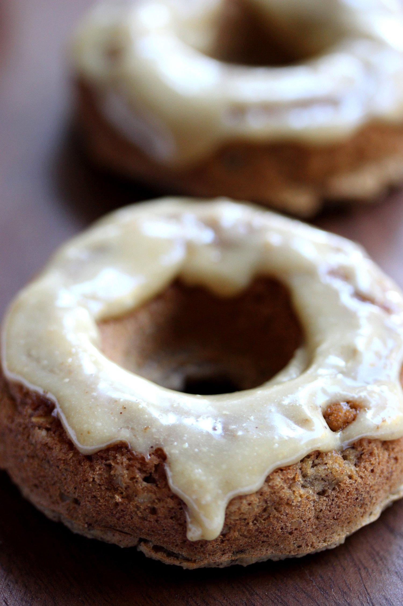
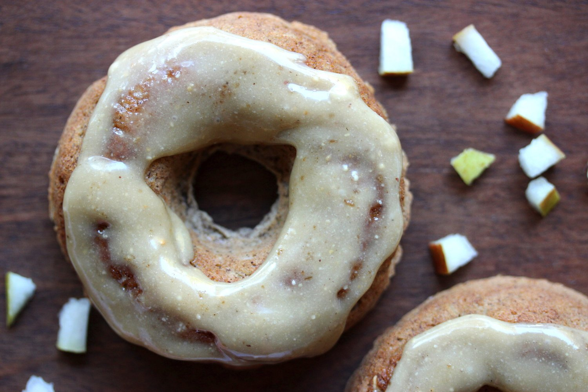
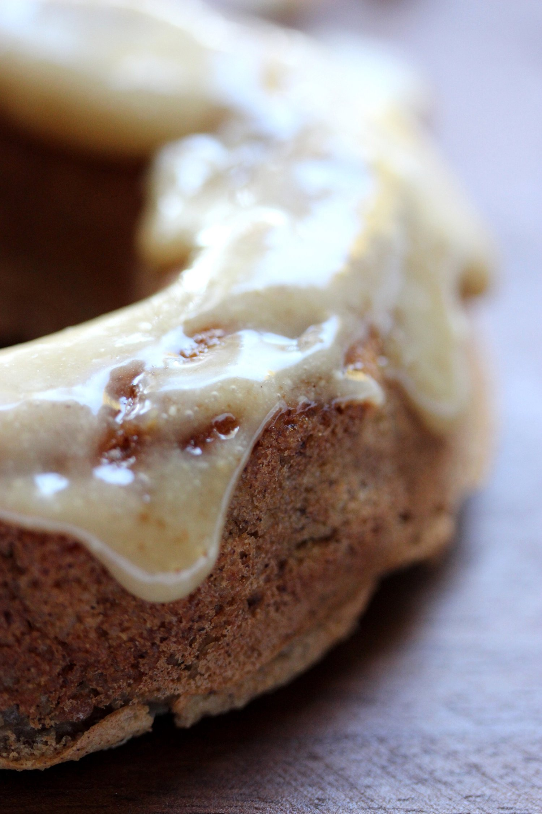
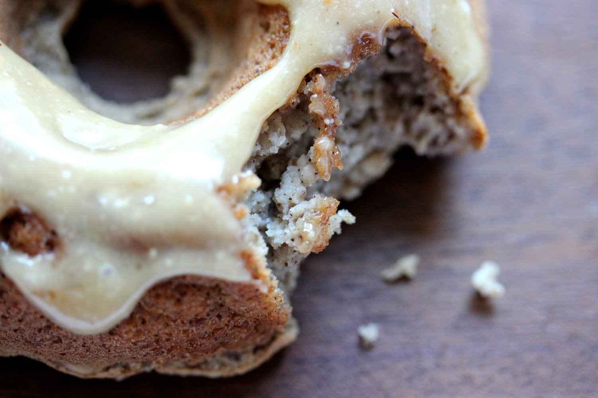
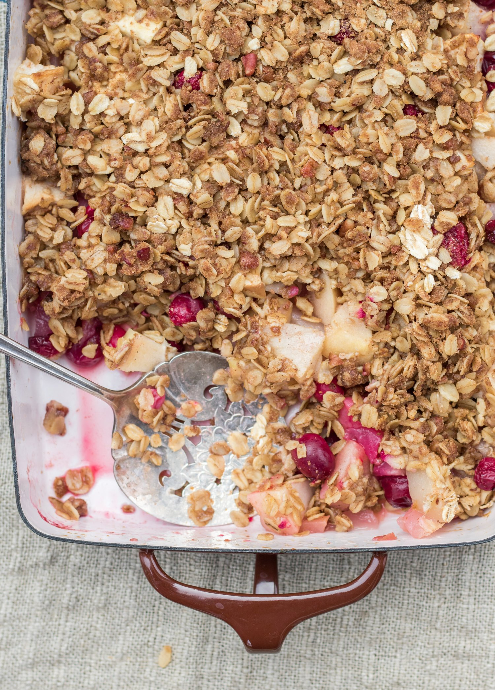
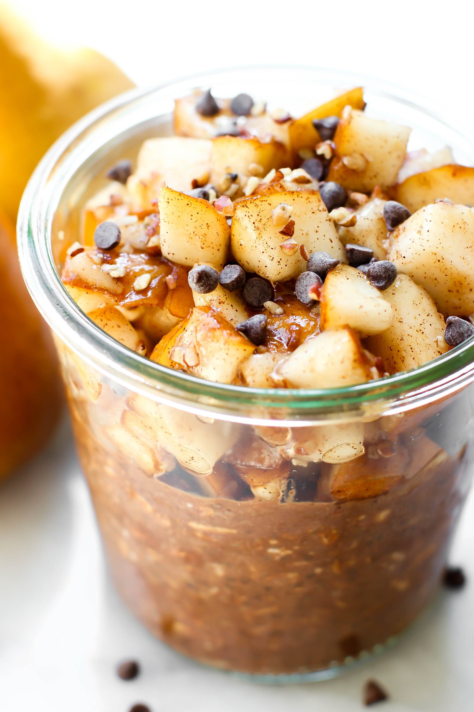
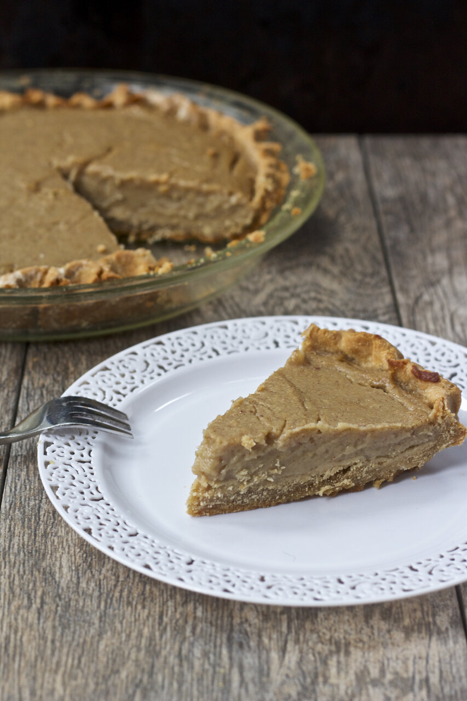
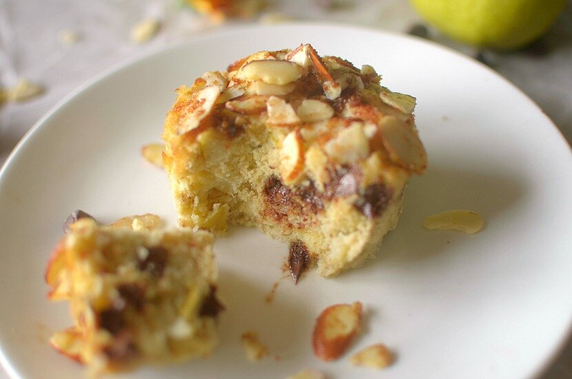

Spiced Pear Donuts with Cashew Caramel Icing - PEARS 5 DELICIOUS VEGAN WAYS





Cakey, spiced pear donuts topped with a satisfyingly sweet cashew caramel icing. These comforting donuts are vegan, gluten free, and refined sugar free. Feel free to enjoy these healthy donuts for dessert, breakfast, or even a warm and cozy snack.
This recipe is part of a collection of 5 fall inspired pear recipes by some really great bloggers, so if you’re looking for some vegan pear treats, check out the other 4 recipes at the end of this post!
Pears are in season; can you believe it's already fall?! I honestly can't. This year had been a total whirlwind and I don't know how it's fall again already. But yay! Fall! I'm not a fan of the cold weather...but just about everything else? Gimme that. Scarves, fallen leaves, cozy fires, hot tea, oatmeal, and the flavors of fall. Pears are definitely a fall essential flavor. Add a little cinnamon and allspice? Oh I'm sold. Like the smell of a hot spiced cider ready to comfort you. What goes best with pears and cinnamon? Caramel, of course! Sticky, sweet caramel to perfectly waltz in your mouth with the warmth of the spice and soft chunks of pear.
While being such a complex arrangement of flavors, the actual caramel is so simple to make and only needs two ingredients. I used cashew butter for a soft, creamy, and mellow caramel; however, any nut butter could be used. Almond butter would be really great if you'd like a more earthy, deep flavor to the caramel.
This spiced pear donut recipe results in plump, cakey donuts just begging for consumption. Just as you are overtaken by the melt-in-your-mouth texture of the baked dough, you hit an occasional chunk of soft, juicy pear. Have to keep the eating experience exciting, right? Overall, these decadent donuts are otherworldly. Good thing this recipe only results in two donuts. Any more than that and I might have a dangerous, delicious situation on my hands.
Grab yourself some fresh pears and try these spiced pear donuts yourself! They are gluten free, vegan, and refined sugar free, so you can truly enjoy this healthy, wholesome treat! Don’t forget; if you’re looking for some more seductive pear recipes, check out the other 4 vegan recipes at the end of this post. All of the recipes are stunning!!!
Spiced Pear Donuts with a Cashew Caramel Icing
Makes: 2 Donuts
Donut Batter
-
1/3 cup raw oats
-
2 TBSP almond meal/flour
-
1/2 serving vanilla pea protein (15 g)
-
½ tsp baking powder
-
½ tsp cinnamon
-
1/4 tsp allspice
-
½ cup + 1 TBSP unsweetened almond milk
-
2 TBSP finely diced pear
Cashew Caramel Icing
-
1 TBSP brown rice syrup
-
1/2 TBSP cashew butter (or almond butter, peanut butter)
Preheat the oven to 350 F. Using a magic bullet or other similar small blender, grind the oats into a flour. In a small bowl, mix the oat flour with the almond meal, protein powder, baking powder, cinnamon, and allspice. Then slowly stir in the almond milk until a donut batter is formed. Lightly fold in the diced pear. Spray a donut pan with nonstick spray; pour the batter into two donut molds. Bake at 350 F for 17-20 minutes, until the donuts are firm. Remove from the oven, let cool 5 minutes. Make the icing by mixing the brown rice syrup and cashew butter. Spread the icing on top of the donuts. If you let it sit for 1-2 minutes, the icing will glaze over into a perfectly firm coating. Enjoy!
4 More Vegan Pear Recipes
1. Pear Cranberry Crisp from Choosing Chia
2. Spiced Chocolate Pear Overnight Oats from Feasting on Fruit
3. Pear Parsnip Pie from Healthy Helper
4. Chocolate Chip Pear Streusel Mugcake from Athletic Avocado



